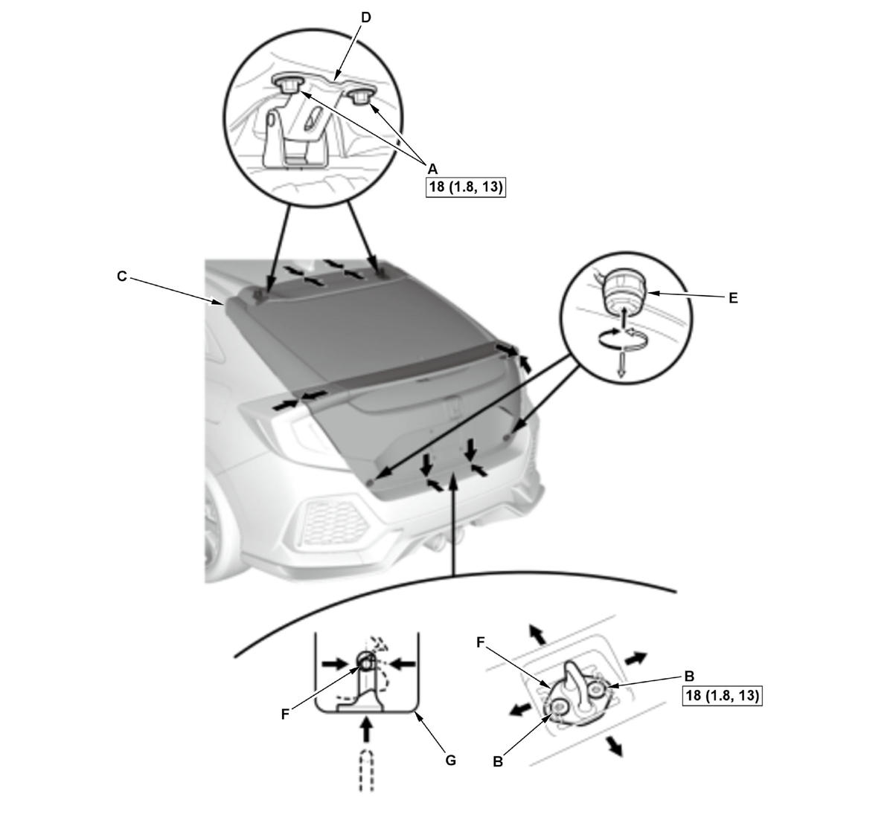

Tailgate Adjustment (2017 2018 2019 2020 2021): Adjustment
NOTE: How to read the torque specifications .
- Tailgate - Adjust
1. Remove the striker cap (A) from the rear trim panel (B). 2. Remove the tailgate support strut .

Courtesy of HONDA, U.S.A., INC.3. Slightly loosen the tailgate hinge bolts (A) and the striker bolts (B).
4. Adjust the tailgate (C) alignment in the following sequence:
- Adjust the tailgate hinges (D) right and left, as well as forward and rearward, by using the elongated holes. Take care not to hit the rear window when loosening the bolts.
- Turn the tailgate edge cushions (E), in or out as necessary, to make the tailgate fit flush with the body at the rear and side edges.
- Adjust the fit between the tailgate and the tailgate opening by moving the striker (F), and adjust the striker right or left until it is centered in the tailgate latch (G).
5. Tighten each bolt to the specified torque.
6. Make sure the tailgate opens properly and locks securely.
7. Install the tailgate support strut .
8. Apply touch-up paint to the hinge mounting bolts and around the hinges, and let the paint dry.
9. Apply the multipurpose grease to the pivot area of the tailgate hinges (A) as indicated by the arrows. - Water Leaks - Check